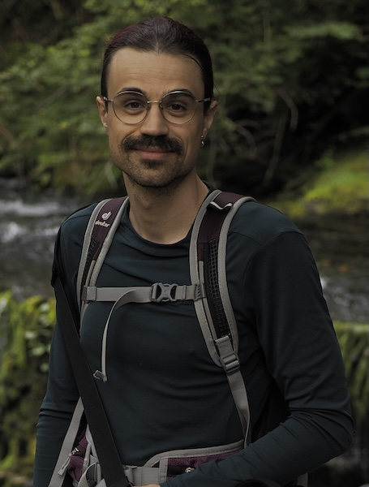

this is the place to find information about how and when to meet me. useful for project students, tutees, and those looking for support on one of my modules.
2nd june (al)
9th june (al)
16th june (al)
22nd to 23rd june (giving a talk in york)
25th june (al)
29th june to 3rd july (not away, but busy with logic colloquium)
11th to 18th july 2026 (history of science conference edinburgh)
find them on the intranet. we are constantly threatened this intranet may disappear.
office hours depend on your need. if you are a project student, please book a meeting. if you are seeing me for a module, see below. if you are looking for the head of year 3, choose any of the below options; you can even straight up email me.
to be organised in september
to be organised in january 2027
to be reorganised in september
if you are a personal tutee or a project student, or need to see me in my year head role, visit my booking page.
the booking times are basically all day tuesday, thursday, and friday, minus any meetings i might have, and the above drop-ins.
note fridays i am working on singleton campus, in the margam building, until september.
if you are for any reason seeing me remotely, it will be at this link: https://swanseauniversity.zoom.us/my/t.k.astarte.
be aware you cannot just turn up here to see me, it has to be arranged in advance. note there is a waiting room.
in case you need to know what i look like. taken in early august 2025 by kate mee.

Last updated: 2026-05-28